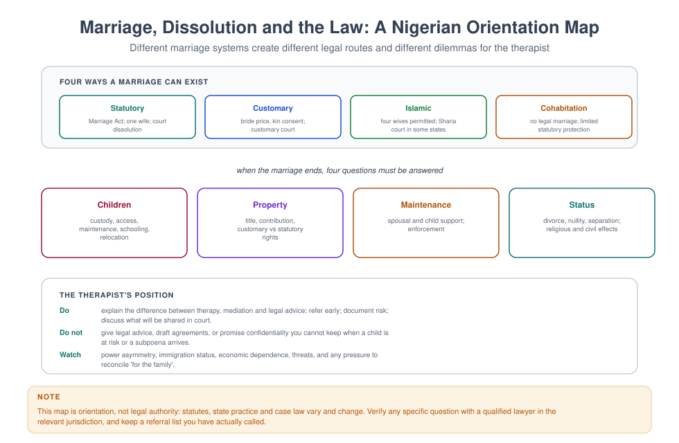
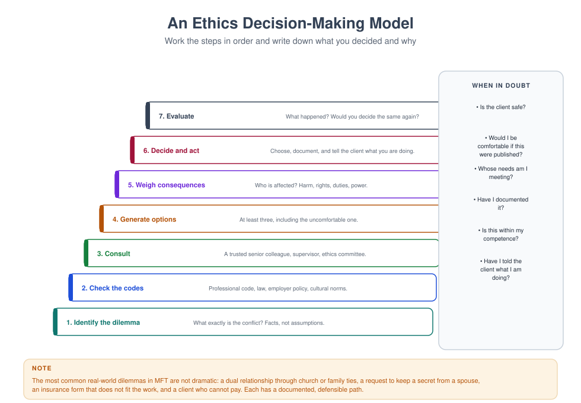

MFT 724 — Family Law and Advocacy
Course leader's summary. Family therapists work at the edge of the legal system: custody disputes, protection proceedings, divorce, maintenance, guardianship. This course gives you the legal literacy to be useful, the boundaries to stay in your lane, and the advocacy skills to change the systems your clients pass through.
How to use this book
This is orientation, not legal advice. Statutes, case law and state practice vary and change. Every week names the questions you should ask a lawyer, not the answers you should give a client. The final weeks turn from individual cases to systemic advocacy.
1. Course description
The course covers: the Nigerian marriage and family law framework (statutory, customary, Islamic and cohabitation); divorce and dissolution; custody, access and maintenance; the welfare principle; child rights and protection law; domestic violence legislation; mediation and alternative dispute resolution; report writing and expert testimony; the therapist's role in court; and advocacy for policy and service change.
2. Learning outcomes
| # | Outcome | Assessed |
|---|---|---|
| LO1 | Explain the four marriage systems and their dissolution routes | Exam |
| LO2 | Describe the legal framework for custody, maintenance and child protection | Exam |
| LO3 | Distinguish therapy, mediation, expert assessment and legal advice | Viva |
| LO4 | Write a defensible court-facing report within your competence | Report |
| LO5 | Prepare a client for legal processes without becoming an advocate for a version of events | Case study |
| LO6 | Conduct safe mediation or refer appropriately | Skills test |
| LO7 | Design an advocacy campaign or policy proposal | Proposal |
3. Assessment
| Component | Weight | Due |
|---|---|---|
| Legal framework examination | 25% | Week 7 |
| Court-facing report (2,000 words) | 30% | Week 10 |
| Mediation skills assessment (30 min) | 20% | Week 12 |
| Advocacy proposal (1,500 words + presentation) | 25% | Week 14 |
4. The fourteen-week plan
| Week | Topic | Practical |
|---|---|---|
| 1 | Why family therapists need legal literacy | Role boundary mapping |
| 2 | Four marriage systems | Case classification |
| 3 | Divorce and dissolution | Route mapping |
| 4 | Custody, access and the welfare principle | Custody scenario |
| 5 | Maintenance and financial provision | Calculation exercise |
| 6 | Child rights and protection law | Reporting scenario |
| 7 | Examination; domestic violence law | Protection order pathway |
| 8 | Mediation and ADR | Mediation demonstration |
| 9 | The therapist in court: reports and testimony | Report drafting |
| 10 | Report due; expert versus treating roles | Role conflict analysis |
| 11 | Working with lawyers and courts | Interprofessional simulation |
| 12 | Mediation assessment | Assessed |
| 13 | Advocacy: from case to policy | Campaign design |
| 14 | Advocacy proposal; integration | Presentations |
Week 1 — Why legal literacy matters
Three reasons.
- Your clients are inside legal processes. Divorce, custody, maintenance, protection orders, immigration, inheritance. If you do not know the terrain, you cannot help them navigate it.
- You will be asked for opinions you should not give. "Will I get custody?" is a legal question with a clinical component. Confusing them harms clients.
- You may be a witness or a report-writer. The quality of your documentation determines whether your evidence is useful or damaging.
The boundary map.
| Activity | Who does it | Your role |
|---|---|---|
| Legal advice | Lawyer | Refer; explain the difference |
| Mediation | Trained mediator | Conduct only if trained and if safe; otherwise refer |
| Therapeutic work | You | Your core role |
| Expert assessment (custody) | Independent expert | Generally not your own client |
| Court testimony | Witness | Fact witness; opinion only within expertise |
| Advocacy | You, as a professional | Legitimate, within your competence and evidence |

Week 2 — Four marriage systems
| System | Legal basis | Form | Dissolution route |
|---|---|---|---|
| Statutory | Marriage Act | Monogamous; registered | High Court petition under the Matrimonial Causes Act |
| Customary | Customary law; state customary courts | Bride price, kin consent; potentially polygynous | Customary court; customary arbitration |
| Islamic | Islamic law; Sharia courts in relevant states | Up to four wives | Sharia court; talaq, khul', or judicial dissolution |
| Cohabitation | No marriage | — | No dissolution; limited statutory protection |
Clinical implications of the overlap. A couple may be married under two systems; the customary marriage may not be registered; the religious ceremony may have legal consequences; and children's status may depend on which system applies. Do not assume.
Ask: "How was your marriage formalised? Was it registered? Is there a certificate? Which court would you go to if you needed to?" Then refer to a lawyer for the answer's consequences.
Week 3 — Divorce and dissolution
Statutory divorce (orientation). Governed by the Matrimonial Causes Act: a petition to the High Court; a two-year minimum duration (with exceptions); a recognised ground (adultery, unreasonable behaviour, desertion, separation, or living apart); and provision for custody, maintenance, property and costs.
Customary and Islamic dissolution. Different processes, different courts, different evidentiary rules, different outcomes for women in practice. Know where to refer.
The therapist's role.
- Help the couple/clients clarify what they are deciding (discernment).
- Explain that therapy is not a legal process and does not produce evidence for court.
- Support the emotional work alongside the legal process.
- Refer for legal advice early, not at the point of crisis.
- Warn clients that therapy records may be requested in proceedings.
Week 4 — Custody, access and the welfare principle
The welfare principle. Decisions about children are governed by the child's best interests, not the parents' preferences or the mother's automatic entitlement.
What courts consider (broadly). The child's wishes (weighted by age and understanding); continuity of care; the capacity of each parent; the child's relationship with each parent; siblings; education and health; and any risk of harm.
The therapist's contribution. You can describe the child's relationships, needs and views (carefully, and with appropriate methods); you can support the parents to reduce conflict; and you can help them construct a parenting plan.
What you should not do. Offer a custody recommendation for your own client. That is an expert assessment requiring independence, a defined methodology and often a court appointment. Role conflict invalidates the opinion and harms the family.
The parenting plan. Residence, contact, holidays, schooling, health decisions, communication, transitions, handovers, new partners, and a dispute-resolution clause. Concrete plans reduce conflict.
Week 5 — Maintenance and financial provision
Child maintenance. Both parents have an obligation to maintain their children, under statutory and customary law. Amounts are determined by need, capacity and standard of living; enforcement is a practical problem.
Spousal maintenance. Available in some statutory proceedings; less so in customary and religious frameworks and highly variable in practice.
The therapist's role. Money is clinical material: it carries meaning about fairness, power and abandonment. Help the couple separate the amount from the meaning; encourage full financial disclosure; and refer for legal advice on entitlements.
Practical support. Referral to legal aid, mediation services, and women's rights organisations where appropriate.
Week 6 — Child rights and protection
The Child Rights Act (2003) — adopted in many but not all Nigerian states — sets out the rights of the child, including protection from abuse and neglect, the right to be heard, and provisions on child marriage, child labour, and alternative care. State child protection laws and structures operationalise it.
Your duties.
- Recognise signs of abuse and neglect.
- Respond without leading or investigating.
- Record verbatim.
- Report through the designated route (state ministry responsible for social welfare; police family unit; designated safeguarding lead).
- Document the advice received and the action taken.
- Support the child through the process.
What not to do. Investigate yourself; promise secrecy; confront the alleged abuser; or delay the report while you "gather more information".
Week 7 — Domestic violence law
The Violence Against Persons (Prohibition) Act 2015 applies in the FCT and in states that have adopted it; other states have their own laws or rely on criminal provisions. Protection orders, duties of the police and support for victims vary substantially by jurisdiction.
The clinician's knowledge. Where the nearest police family unit is; what a protection order requires; which shelters and legal aid organisations exist; and what happens procedurally to a woman who reports.
The clinician's limits. You are not the police, the lawyer, or the judge. Your role is safety planning, documentation, referral and support — and not making the client's decisions for her.
Week 8 — Mediation and alternative dispute resolution
What mediation is. A structured, voluntary process in which a neutral third party helps the parties reach their own agreement. It is not therapy and not arbitration.
When it is suitable. Both parties voluntary and safe; no coercive control; reasonably balanced power; an issue that can be negotiated; and willingness to disclose information.
When it is not. Violence or coercion; a severe power imbalance (including literacy, language or economic dependency); untreated substance use or mental illness that prevents participation; and safeguarding concerns.
Structure of a mediation session. Opening and ground rules → each party's account → identification of issues → exploration of interests → generation of options → negotiation → agreement documented → review.
The therapist's temptation. To slip into therapy mid-mediation (exploring feelings) or into advice. Explain the frame at the start and hold it.
Week 9 — Reports and court
The report structure.
- Your role, qualifications and the basis of your opinion.
- Who you saw, when, and with whose consent.
- Methodology (interviews, observation, measures).
- Findings, described behaviourally.
- Opinion, clearly separated and limited to your expertise.
- Limitations, explicitly stated.
- Recommendations, if requested and within competence.
Language. "It is my opinion that…" not "the court should". No adjectives about character. No speculation about events you did not observe.
Testimony. Answer the question asked; do not volunteer; distinguish fact from opinion from hypothesis; say "I don't know" when you don't; and remain courteous under challenge.
Records. Assume that anything you write may be read in court. Write accordingly.
Week 10 — Expert versus treating roles

| Treating clinician | Expert assessor |
|---|---|
| Paid by/for the client; therapeutic duty | Paid by the court; duty to the court |
| Confidential | Limited confidentiality; report disclosed |
| Advocates for the client's wellbeing | Neutral; reports what the evidence shows |
| Continuous relationship | Time-limited, defined assessment |
| Cannot be objective about custody | Can be objective if independent |
The conflict is structural, not a matter of willpower. Accepting both roles compromises the therapy and the evidence. If asked, explain and refer.
Where you can help. Provide factual records with consent and a court order as required; support the client through the process; and help parents reduce conflict.
Week 11 — Working with lawyers and courts
What lawyers need from you. Clear, dated, factual information; a timely response; an opinion you can defend; and an understanding of your limits.
What you need from them. Clarity about the purpose of the report; the legal questions to address; the deadline and format; and confirmation of consent arrangements.
Interprofessional etiquette. Do not tell a lawyer their job; do not let a lawyer tell you your clinical findings. Negotiate the boundary explicitly and in writing.
Week 12 — Mediation skills assessment
Thirty minutes, role-played. Assessed on: framing and ground rules; neutrality; screening for safety; interest-based exploration; option generation; documentation; and referral decisions.
Week 13 — Advocacy
From case to policy. Individual work reveals systemic failures: no shelter, no legal aid, no interpreter, no protection order enforcement, no follow-up. Advocacy is the professional response.
Levels.
- Case advocacy — with one client: writing a letter, making a call, accompanying to a service (with care).
- Service advocacy — improving your own organisation's pathway.
- Policy advocacy — submissions, research briefs, media, coalitions.
- Community advocacy — working with community organisations and faith groups.
The evidence base for advocacy. Documented case patterns, service data, and research. Anecdote persuades sympathetic listeners; data persuades sceptical ones.
Ethical guardrails. Consent before using a client's story; never identify a client; separate your professional opinion from your personal politics; and do not compromise clinical relationships for a campaign.
Week 14 — Advocacy proposal and integration
Present a 1,500-word proposal: the problem, the evidence, the target, the ask, the allies, the timeline, and how you will know whether it worked. Then, in the final discussion, return to the boundary map from Week 1 and revise it with what you have learned.
Glossary
ADR — alternative dispute resolution. Coercive control — a pattern of domination and isolation that makes mediation unsafe. Guardian ad litem — a person appointed to represent a child's interests in proceedings. Maintenance — financial support owed to a spouse or child. Matrimonial Causes Act — the Nigerian statute governing statutory divorce. Protection order — a court order restraining a person from specified conduct. Welfare principle — the rule that the child's best interests govern decisions about them.
Self-assessment
Multiple choice
1. A therapist asked by a client "will I get custody?" should: (a) predict the outcome (b) explain the welfare principle and refer for legal advice (c) refuse to speak (d) advise on strategy
2. Conducting a custody evaluation of your own client is: (a) acceptable with consent (b) a role conflict (c) required (d) ideal
3. Mediation is contraindicated when: (a) parties disagree (b) there is coercive control (c) there are children (d) money is involved
4. The welfare principle concerns: (a) the parents' rights (b) the child's best interests (c) the court's convenience (d) the family's income
5. A child protection concern should first be: (a) investigated by you (b) recorded and reported through the designated route (c) discussed with the family (d) held until you are certain
6. In mediation the therapist should: (a) explore childhood (b) hold the mediation frame (c) give legal advice (d) take sides
7. An expert report should separate: (a) facts from opinions (b) parents from children (c) fees from findings (d) nothing
8. Advocacy with a client's story requires: (a) no consent (b) informed consent and anonymisation (c) media involvement (d) the client's name
9. The four marriage systems include all except: (a) statutory (b) customary (c) Islamic (d) corporate
10. Therapy records in litigation should be treated as: (a) permanently confidential (b) potentially disclosable (c) irrelevant (d) destroyed immediately
Answer key
1 b · 2 b · 3 b · 4 b · 5 b · 6 b · 7 a · 8 b · 9 d · 10 b
Short answer
- Distinguish therapy, mediation, expert assessment and legal advice.
- What are the grounds for refusing to mediate?
- Outline a court-facing report structure.
- List the steps when you suspect child abuse.
- Give three examples of legitimate professional advocacy.
Essay (choose one, 2,000 words)
- "The therapist's duty is to the family, the expert's duty is to the court." Analyse the consequences.
- Critically examine the protection available to victims of domestic violence in your jurisdiction.
- Design an advocacy campaign to improve one aspect of family justice in your context.
Further reading
- Matrimonial Causes Act (Nigeria), Cap M7 LFN 2004.
- Child Rights Act (Nigeria), 2003.
- Violence Against Persons (Prohibition) Act, 2015.
- Stahl, P. M. (2011). Conducting Child Custody Evaluations (2nd ed.). Sage.
- Emery, R. E. (2012). Renegotiating Family Relationships (2nd ed.). Guilford.
- Barsky, A. E. (2016). Clinicians in Court (2nd ed.). Guilford.